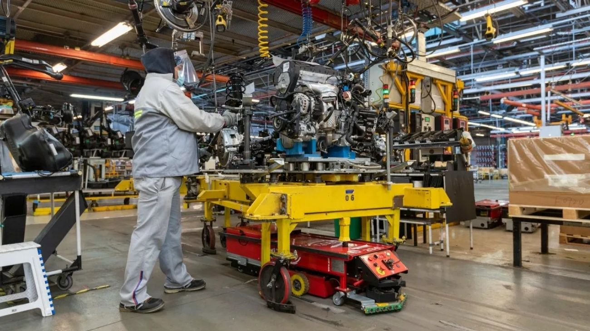

La economía argentina creció 0,3% en febrero y lleva tres meses consecutivos al alza
El INDEC publicó el Estimador Mensual de Actividad Económica (EMAE) de febrero de 2026, que mostró un crecimiento del 0,3% respecto a enero y confirmó una racha de tres meses consecutivos de expansión. El agro volvió a ser el principal motor de la suba, con seis de los diez sectores relevados en terreno positivo.

La economía argentina sigue dando señales de recuperación gradual. El Estimador Mensual de Actividad Económica (EMAE) —el indicador que publica el INDEC mensualmente para medir cómo evoluciona la actividad antes de los datos oficiales del PBI— registró en febrero de 2026 un crecimiento del 0,3% respecto a enero, consolidando una racha de tres meses consecutivos en terreno positivo. Para quienes no están familiarizados con el indicador, el EMAE funciona como un termómetro de la economía en tiempo casi real: permite saber si el país está creciendo o contrayéndose mes a mes, sin esperar los datos trimestrales del Producto Bruto Interno. Que encadene tres meses seguidos de suba es una señal de que la tendencia de recuperación, aunque moderada, se mantiene firme.
El agro volvió a ser protagonista de los datos positivos, en línea con lo que ya se había visto en enero. El sector agropecuario viene impulsando la actividad gracias a una campaña favorable y a los niveles de producción que Vaca Muerta y el campo en general están mostrando. Sin embargo, el crecimiento no es homogéneo: seis de los diez sectores relevados mostraron variaciones positivas, mientras que los restantes se mantuvieron estancados o con leves caídas. Esto revela que la recuperación todavía no llegó de manera pareja a todos los rincones de la economía.
Sectores como el consumo interno, la construcción y parte de la industria manufacturera siguen mostrando debilidad, lo que indica que el crecimiento aún está liderado por los sectores exportadores más que por la demanda doméstica.
En perspectiva histórica, el dato de febrero es positivo pero moderado. Hay que recordar que la economía argentina cerró 2025 con una expansión acumulada del 4,4%, impulsada en gran parte por el agro, la intermediación financiera y la energía. El desafío para 2026 es que ese crecimiento se extienda a sectores que generan más empleo masivo, como el comercio y la manufactura tradicional. Por ahora, la recuperación avanza a paso firme pero sin grandes sobresaltos, lo que es consistente con las proyecciones de los principales organismos internacionales, que esperan un crecimiento de entre 3,5% y 4% para el año completo.
El dato llega en un momento en que el Gobierno acumula noticias económicas mixtas pero en general favorables: la pobreza bajó al nivel más bajo desde 2018, la inversión privada sigue fluyendo en sectores estratégicos como energía y minería, y el mercado de crédito hipotecario muestra señales de reactivación. Tres meses consecutivos de crecimiento del EMAE son, en ese contexto, un dato que el Gobierno puede mostrar con satisfacción, aunque los analistas advierten que la prueba de fuego será sostener esa dinámica en los próximos meses, cuando el efecto de las reformas estructurales empiece a sentirse con más fuerza en el tejido productivo real.